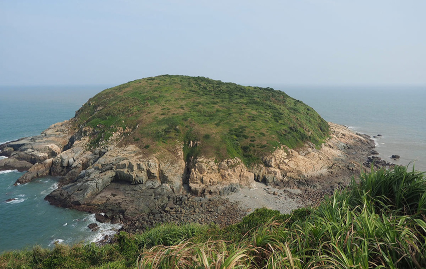
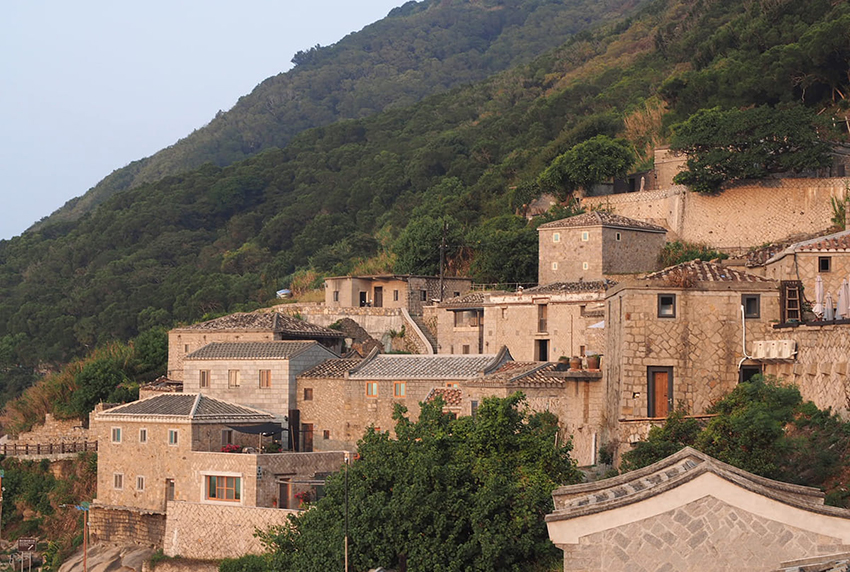
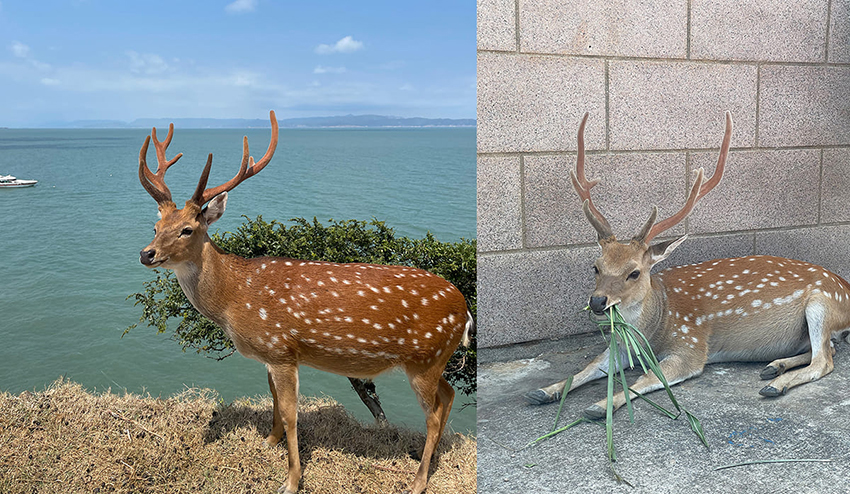
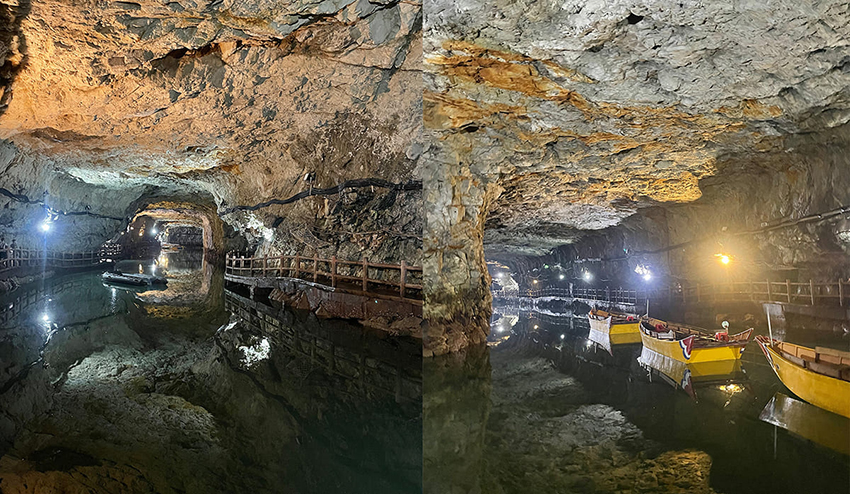
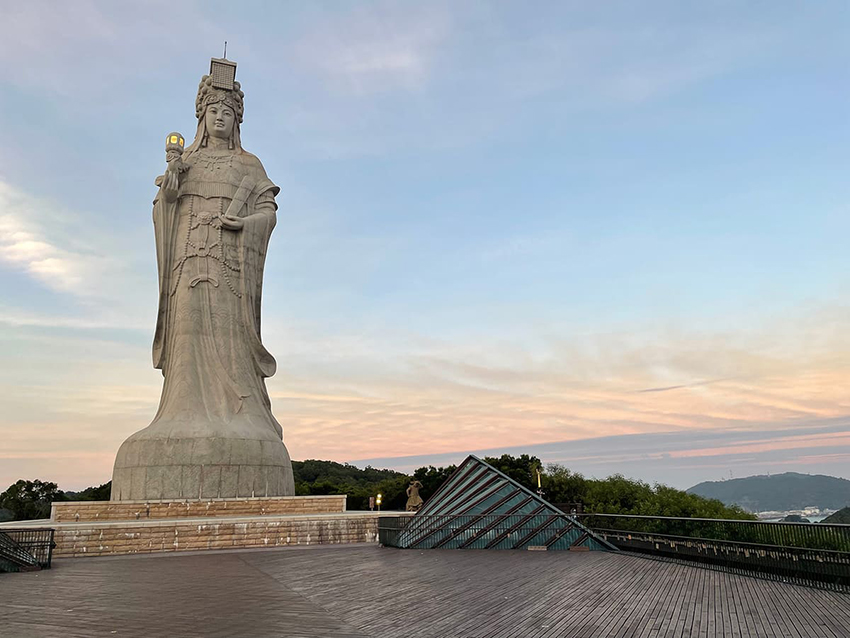
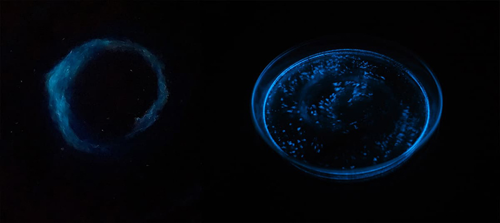
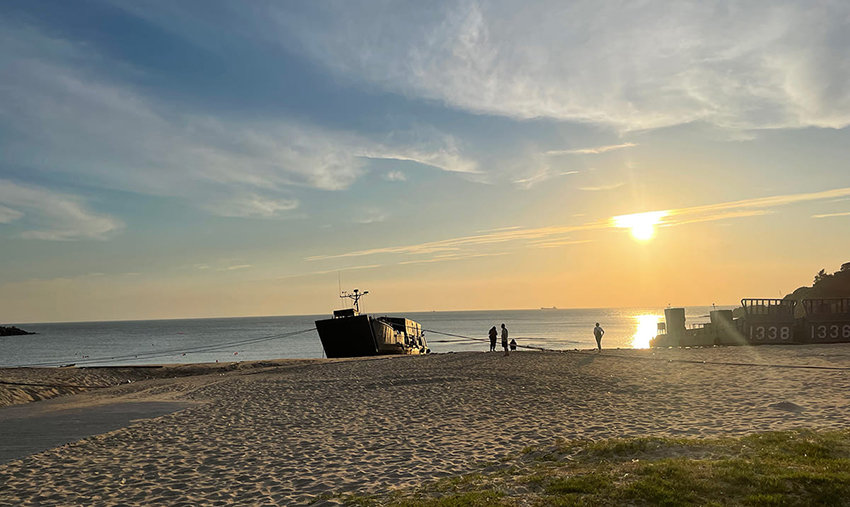

馬祖位於連江縣，距台灣170公里，而距大陸只有10公里左右。站在海岸線上就可以遙望對岸，能想像過去作戰時的驚心動魄。這次趁中秋連假衝一發馬祖，南、北竿各兩天，走訪24個景點。
四日遊規劃：
Day1 [北竿] 坂里古厝、天后宮 > 蛤蠣島 > 芹壁村
Day2 [北竿] 大坵島 > 戰爭和平紀念館 > 壁山觀景台 > 芹壁村 > 37據點 > 塘後沙灘
Day3 [北竿] 06 據點 > 大胆據點 > 螺蚌山 [南竿] 牛角聚落 > 八八坑道 > 枕戈待旦 > 馬祖民俗文物館 > 大漢據點 > 北海坑道 > 媽祖巨神像
Day4 [南竿] 雲台山 > 津沙聚落 > 勝利堡 > 夫人咖啡館 > 藍眼淚生態館 > 祈福坑道 > 馬祖港沙灘
我們搭飛機從松山到南竿，再從南竿福澳港搭船到北竿白沙港。坐在機車後座行駛馬祖的路上，最讓人印象深刻是各種斜坡。不管是南竿還北竿，島上到處都是高高低低的坡，北竿似乎更為陡峭，每次上下坡時都特別膽顫心驚。後來離開北竿才聽說，不少人在北竿摔車… 大家來這邊騎車真的要小心！
以下分享幾個自己還滿喜歡的景點：
北竿景點1. 坂里古厝
坂里古厝是一棟擁有百年歷史、馬祖閩東式傳統大戶人家的石頭屋，原是北竿的王氏宗親所有，在戰地政務時曾被徵調成軍方住所，2009年時馬管處為保存閩東式建築、轉為文化觀光用途。黃金餃是來到坂里古厝必吃的食物，又稱地瓜餃，外層是QQ的地瓜皮，內餡是花生粉加芝麻。
北竿景點2. 蛤蠣島
位在北竿最西南端，是白沙尼姑山的陸連島，整座島的形狀就像一顆蛤蠣。蛤蠣島四周都是懸崖峭壁，在退潮時才會與北竿島相連。這裡沒什麼人，風很大，景色優美，是北竿秘境之一。
北竿景點3. 芹壁村
|  |
馬祖最著名的閩東式聚落。名字由來有二：第一是位於芹山與壁山之間，故為芹壁村。第二是澳口有一塊形狀像烏龜的岩石，居民稱為「芹仔」，從海面上看去，芹壁村就像位於芹仔的後壁，所以叫芹壁村。因為太喜歡芹壁村了，兩天的北竿行程都忍不住來這裡多停留一段時間。來到芹壁村有種偽出國的感覺，想起多年前去克羅埃西亞，穿梭在巷弄間，到了芹壁村總覺得似曾相識。下午坐在芹沃咖啡館戶外位置，看著海景與層層聚落，搭配老酒豬肉蛋披薩與飲品。
日落時分，村落籠上一片淡淡的粉色。
|  |
景點4. 大坵島
我們從橋仔港搭船出發大坵，大約五到十分鐘就能到達，4-10月間，北竿橋仔港開往大坵每天只會有兩個航班，分別是8：30和9：30，回程則是11：00與11：30。所以要把握好時間，若想徒步環島，兩小時的時間稍微緊湊，盡量不要在原地停留太久。大坵島昔日曾經有民眾居住及軍隊駐守。1998年駐守大坵的國軍全數撤離後，大坵成為無人島。留下來的梅花鹿，從十三頭逐漸繁殖到上百頭。在橋仔港出發前，可以在乘船處買桑葉，一把50元，到了島上就能餵食梅花鹿了。
|  |
北竿景點5. 壁山觀景台
馬祖第一高峰，但標高只有298公尺。可眺望北竿機場、塘岐村、后沃甚至遠方無人島的大坵、小坵等地區風景。
結束北竿的兩天行，從白沙港搭船到南竿的福澳港。南竿被當地人稱為「本島」，是人口聚居的主要島嶼，也是馬祖交通、政治、經濟、教育及文化中心。
南竿景點1. 八八坑道
坑道長年維持在攝氏16-19度，恆溫又穩定的環境，是絕佳的儲藏酒窖，主體由花崗岩所構成。一進到坑道理，可以感受到滿滿的潮濕與一股濃濃的酒味。
南竿景點2. 枕戈待旦紀念公園
位於福山公園山頭上，為蔣中正總統於民國47年蒞臨馬袓巡視防務時，為嘉勉地區軍民不忘復國之志而親筆所題。搭船來福澳港時，遠遠的就可以看見這經典的地標。
南竿景點3. 北海坑道
北海坑道是民國57年時因為戰略需要而開鑿的地下碼頭，專供游擊戰艇停泊使用。動員了約七萬人，歷時820天日夜趕工而成。北海坑道的潮汐高低落差極大，漲潮時步道會全部被海水淹沒，退潮時步道才會開放。走一圈需要大約30分鐘。到了藍眼淚季節，還可以搭乘搖櫓船，夜間觀賞藍眼淚。
南竿景點4. 媽祖巨神像
|  |
媽祖巨神像落成於2009年，代表著馬祖人民對於媽祖信仰的虔誠。觀景平台是看夕陽的好去處，平台下方有個轎子與小小的洞口，是祈福坑道的入口，開放時間為早上八點到下午五點半，過了五點半坑道就會熄燈一片漆黑。
|  |
南竿景點5. 津沙聚落
津沙聚落是南竿經典石厝群建築。有句話說北竿有芹壁、南竿有津沙。因早先擁有如金砂般細緻的沙灘，故名金沙，後寫作津沙，是賞夕陽、踏沙灘的好去處。
南竿景點6. 雲台山
標高248公尺，是南竿第一高峰，也是小百岳之一，視野最佳之處。山上有座軍方觀測所、兵旗台及眺望平台。
南竿景點7. 藍眼淚生態館
九月多來馬祖，幾乎沒什麼藍眼淚了，但來到藍眼淚生態館，一年四季都能看到人工養殖的藍眼淚，還可以和他們互動！藍眼淚是一種夜光蟲，需要在完全無光害的狀態下才能看見，互動前先把室內燈光全部關掉，待眼睛適應黑暗，接著只要用掌心拍打水盆兩側，就會看到藍眼淚大爆發，數秒鐘後消失，切記不能一直敲，藍眼淚疲乏就不會發亮了。休息一陣子後，可以拿著滴管波動水面，或是吸水再把水擠回盆中，不同做法會呈現不同效果，盆裡的藍眼淚看起來很像動畫特效。因為是養殖藍眼淚，記得不能把手放入水裡，不然可能會死掉，雖然沒機會看到海中一整片藍眼淚，但第一次親眼看到水盆中的藍眼淚，卻讓人格外驚艷，更讓人期待未來藍眼淚季節的追淚之旅了！
|  |
馬祖有著豐富的自然生態，也富含人文氣息。 現在回想起來馬祖四天的旅行仍然念念不忘。
就以美美的馬祖港沙灘夕陽做結尾吧。
|  |